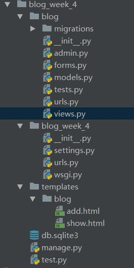

前言
学习最快的办法就是动手实践。
- 通过上一个笔记的学习，我们应该能学习到了内容如下
- 能使用 Django创建 项目和一些参数的说明
- 能清楚Django默认创建项目的文件目录结构
- 通过本笔记的学习我们可以学习到的知识点如下
- 默认创建的Django配置解读
- 创建app
- 实例一个MVT
实例
从上一个笔记到这个笔记的过度，需要动手操作才能很好的掌握。Django版本1.8.5
实例（二）
默认的配置文件了解
Django相关的配置都在settings.py文件中1
2
3
4
5
6
7
8
9
10
11
12
13
14
15
16
17
18
19
20
21
22
23
24
25
26
27
28
29
30
31
32
33
34
35
36
37
38
39
40
41
42
43
44
45
46
47
48
49
50
51
52
53
54
55
56
57
58
59
60
61
62
63
64
65
66
67
68
69
70
71
72
73
74
75
76
77
78
79
80
81
82
83
84
85
86
87
88
89
90
91
92
93
94
95
96# Build paths inside the project like this: os.path.join(BASE_DIR, ...)
import os
BASE_DIR = os.path.dirname(os.path.dirname(os.path.abspath(__file__)))
# Quick-start development settings - unsuitable for production
# See https://docs.djangoproject.com/en/1.8/howto/deployment/checklist/
# SECURITY WARNING: keep the secret key used in production secret!
SECRET_KEY = 'abmu19wmz5#1qwmfc_wagpf_vh+8faqs8=#xi=mik1+4*9b*dv'
# SECURITY WARNING: don't run with debug turned on in production!
DEBUG = False #进行调试模式 True为开启
# If this flag set to False, then user can't register account.
IS_REGISTER_PERIOD = True
ALLOWED_HOSTS = ['127.0.0.1']
# Application definition 创建的app应用定义到这里
INSTALLED_APPS = (
'django.contrib.admin', #管理员站点
'django.contrib.auth',#用户验证框架
'django.contrib.contenttypes',#文件类型框架
'django.contrib.sessions',#会话框架
'django.contrib.messages',#消息框架
'django.contrib.staticfiles',#静态资源管理框架
'account', #激活应用
'home',
'dashboard',
'gameboard',
'noticeboard',
)
"""
中间件，介于request 和 response处理之间的一道处理过程，相对比较轻量级，并且在全局上改变，django的输入与输出，因为改变的是全局
所以需要谨慎使用，用不好会影响性能，每一个中间件都会负责一个功能，例如AuthentictionMiddleware和session处理相关，
"""
MIDDLEWARE_CLASSES = (
'django.contrib.sessions.middleware.SessionMiddleware',
'django.middleware.common.CommonMiddleware',
'django.middleware.csrf.CsrfViewMiddleware',
'django.contrib.auth.middleware.AuthenticationMiddleware',
'django.contrib.auth.middleware.SessionAuthenticationMiddleware',
'django.contrib.messages.middleware.MessageMiddleware',
'django.middleware.clickjacking.XFrameOptionsMiddleware',
'django.middleware.security.SecurityMiddleware',
)
ROOT_URLCONF = 'hexactf.urls'#这个变量的值就是根URLconf的模块名，默认是urls.py 文件的模块名
TEMPLATES = [
{
'BACKEND': 'django.template.backends.django.DjangoTemplates',
'DIRS': [os.path.join(BASE_DIR, "static", "templates")], #指定模板文件目录
'APP_DIRS': True,
'OPTIONS': {
'context_processors': [
'django.template.context_processors.debug',
'django.template.context_processors.request',
'django.contrib.auth.context_processors.auth',
'django.contrib.messages.context_processors.messages',
],
},
},
]
WSGI_APPLICATION = 'hexactf.wsgi.application'
# Database
# https://docs.djangoproject.com/en/1.8/ref/settings/#databases
'''
DATABASES = {
'default': {
'ENGINE': 'django.db.backends.sqlite3',
'NAME': os.path.join(BASE_DIR, 'db.sqlite3'),
}
}
'''
DATABASES = {
'default': {
'ENGINE': 'django.db.backends.mysql', #数据库引擎
'NAME': 'database_name',
'USER': 'mysql_id',
'PASSWORD': 'mysql_passwd',
'HOST': 'localhost',
'PORT': '',
}
}
# Internationalization
# https://docs.djangoproject.com/en/1.8/topics/i18n/
LANGUAGE_CODE = 'ko-kr' #语言
TIME_ZONE = 'Asia/Seoul' #时区
USE_I18N = True #语言
USE_L10N = True #数据和时间格式
USE_TZ = False #是否启用时区
# Static files (CSS, JavaScript, Images)
# https://docs.djangoproject.com/en/1.8/howto/static-files/
STATIC_URL = '/static/'
LOGIN_URL = '/account/sign_in/'
LOGOUT_URL = '/account/sign_out/'
MEDIA_ROOT = os.path.join(BASE_DIR, 'static')
MEDIA_URL = '/media/'
if DEBUG:
STATIC_ROOT = os.path.join(BASE_DIR, '/static', 'static')
else:
STATIC_ROOT = os.path.join(BASE_DIR, 'static', 'static')
STATICFILES_DIRS = os.path.join(BASE_DIR, "static", "static"),
创建app
$python manage startapp blog
编写一个MVT
例子的层级目录如下

首先我们创建好了blog app 添加到settings.py 中1
2
3
4
5
6
7
8
9INSTALLED_APPS = (
'django.contrib.admin',
'django.contrib.auth',
'django.contrib.contenttypes',
'django.contrib.sessions',
'django.contrib.messages',
'django.contrib.staticfiles',
'blog',
)
本例子中涉及到model中的相关内容在model.py中，model.py中的代码如下1
2
3
4
5
6
7
8
9
10
11
12
13
14
15
16
17
18
19
20
21
22
23
24
25
26
27
28
29
30
31
32
33
34
35
36
37
38
39
40
41
42
43
44
45
46
47
48
49
50
51
52
53
54
55
56
57
58
59
60
61#coding:utf-8
from django.db import models
from django.contrib.auth.models import User
# Create your models here.
# 创建数据库表
#step1：类名就是数据库中的表名，要继承models
class Category(models.Model):
"""
Django 要求模型必须继承 models.Model 类。
Category 只需要一个简单的分类名 name 就可以了。
CharField 指定了分类名 name 的数据类型，CharField 是字符型，
CharField 的 max_length 参数指定其最大长度，超过这个长度的分类名就不能被存入数据库。
当然 Django 还为我们提供了多种其它的数据类型，如日期时间类型 DateTimeField、整数类型 IntegerField 等等。
Django 内置的全部类型可查看文档：
https://docs.djangoproject.com/en/1.10/ref/models/fields/#field-types
"""
name = models.CharField(max_length=100)
#python3 使用str 把对象以字符串形式显示 shell模式下all()函数可以显示数据
#python2.7 使用unicode
def __unicode__(self):
return self.name
# def __str__(self):
# return self.name
class Tag(models.Model):
"""
标签 Tag 也比较简单，和 Category 一样。
再次强调一定要继承 models.Model 类！
"""
name = models.CharField(max_length=100)
def __unicode__(self):
return self.name
# def __str__(self):
# return self.name
class New(models.Model):
# 文章标题
title = models.CharField(max_length=70)
# 文章正文，我们使用了 TextField。
# 存储比较短的字符串可以使用 CharField，但对于文章的正文来说可能会是一大段文本，因此使用 TextField 来存储大段文本。
body = models.TextField()
# 这两个列分别表示文章的创建时间和最后一次修改时间，存储时间的字段用 DateTimeField 类型。
created_time = models.DateTimeField()
modified_time = models.DateTimeField()
# 文章摘要，可以没有文章摘要，但默认情况下 CharField 要求我们必须存入数据，否则就会报错。
# 指定 CharField 的 blank=True 参数值后就可以允许空值了。
excerpt = models.CharField(max_length=200, blank=True)
# 这是分类与标签，分类与标签的模型我们已经定义在上面。
# 我们在这里把文章对应的数据库表和分类、标签对应的数据库表关联了起来，但是关联形式稍微有点不同。
# 我们规定一篇文章只能对应一个分类，但是一个分类下可以有多篇文章，所以我们使用的是 ForeignKey，即一对多的关联关系。
# 而对于标签来说，一篇文章可以有多个标签，同一个标签下也可能有多篇文章，所以我们使用 ManyToManyField，表明这是多对多的关联关系。
# 同时我们规定文章可以没有标签，因此为标签 tags 指定了 blank=True。
# 如果你对 ForeignKey、ManyToManyField 不了解，请看教程中的解释，亦可参考官方文档：
# https://docs.djangoproject.com/en/1.10/topics/db/models/#relationships
category = models.ForeignKey(Category)
tags = models.ManyToManyField(Tag, blank=True)
# 文章作者，这里 User 是从 django.contrib.auth.models 导入的。
# django.contrib.auth 是 Django 内置的应用，专门用于处理网站用户的注册、登录等流程，User 是 Django 为我们已经写好的用户模型。+
# 这里我们通过 ForeignKey 把文章和 User 关联了起来。
# 因为我们规定一篇文章只能有一个作者，而一个作者可能会写多篇文章，因此这是一对多的关联关系，和 Category 类似。
author = models.ForeignKey(User)
def __unicode__(self):
return self.title
在settings.py中查看数据库的配置信息，创建数据库
准备工作完成之后我们需要执行1
2$python manage.py makemigrations
$python manage.py migrate
所以我们直接在blog目录下的views.py中编写代码1
2
3
4
5
6
7
8
9
10
11
12
13
14
15
16
17
18
19
20
21
22#coding:utf-8
from django.shortcuts import render
from models import New
from django.http import HttpResponse
from forms import AddForm
# Create your views here.
#直接使用Views 把数据推送到Template中进行浏览器显示
def index(request):
return HttpResponse('欢迎来到博客首页！<a href="/show">show</a> <a href="/add">add</a>')
def show(request):
new_list=New.objects.all()
return render(request,'blog/show.html',{'new_list':new_list})
def add(request):
if request.method == 'POST':
form = AddForm(request.POST)
if form.is_valid():
a=form.cleaned_data['a']
b=form.cleaned_data['b']
return HttpResponse(str(int(a)+int(b)))
else:
form=AddForm()
return render(request,'blog/add.html',{'form':form})
代码的说明之后的内容会详细讲到，目前是先这样了解用着。
有了Views中的内容之后，我们怎样把它推送给客户浏览器上进行显示。
之后我们需要在blog目录下的urls.py中进行设置1
2
3
4
5
6
7from django.conf.urls import url
from . import views
urlpatterns=[
url(r'^$',views.index,name='index'),
url(r'^show/$',views.show),
url(r'^add/$',views.add),
]
我们来创建templates这里我们有两种的创建方式，一种是统一在项目的根目录下创建一个templates文件然后里面创建app的名字文件夹本例子中使用的就是这一种，还有一种就是在app blog目录下创建templates文件夹，只是在变代码的时候模板文件路径略有不同而已。
模板文件的代码show.html
1 | <!DOCTYPE html> |
add.html如下1
2
3
4
5
6
7
8
9
10
11
12
13
14<!DOCTYPE html>
<html lang="en">
<head>
<meta charset="UTF-8">
<title>Title</title>
</head>
<body>
<form method="post">
{% csrf_token %}
{{ form}}
<input type="submit" value="提交">
</form>
</body>
</html>
需要使Django找打模板文件的路径
还需要在settings.py中设置DIRS1
2
3
4
5
6
7
8
9
10
11
12
13
14
15TEMPLATES = [
{
'BACKEND': 'django.template.backends.django.DjangoTemplates',
'DIRS': [os.path.join(BASE_DIR, 'templates')],
'APP_DIRS': True,
'OPTIONS': {
'context_processors': [
'django.template.context_processors.debug',
'django.template.context_processors.request',
'django.contrib.auth.context_processors.auth',
'django.contrib.messages.context_processors.messages',
],
},
},
]
最后实现了一个简单的mvt模式，但是之中的内容还需要私下底查一些相关的资料，进行详细的学习。
结束语
本篇的学习，我们了解了Django的MVT模式，本篇的内容还得学习一些Django 中相关操作。代码上传到了github了https://github.com/Huseck/Django-study/tree/Django-study-2 下载配置的问题需要把blog目录下migrations目录下的 inital.py之类的文件删除然后数据迁移1
2
3$python manage.py makemigrations
$python manage.py migrate
$python manage.py runserver
如以下的相关知识点
- Django 处理Form表单的操作
- url正则的知识点
- 模板代码 操作
- Django 怎么处理url参数的传递的

Powered by HyperComments